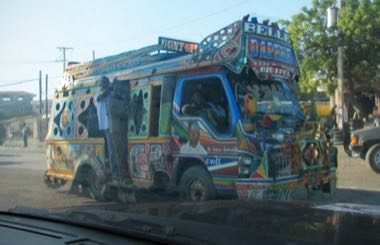

Home / Living Traditions / The Americas: Caribbean
Encyclopedia ID 1461
Tap-Tap Bus Painting
Also known as Tap-tap


Design a gaudy painted shared-taxi bus with panels, portraits, slogans and patterns, then drive it along a colourful route picking up passengers.
Heritage note
Part of the living heritage of Haiti.
Origins
A living tradition passed from person to person; it is not tied to a single dated origin. It belongs to the cultural world of The Americas: Caribbean.
Sources
Related entries

Bahamian Straw Plaiting
Bahamas · Crafts and making
Ebru paper marbling
Turkey · Crafts and making
Ndebele geometric wall painting
South Africa · Crafts and making
Chinese knotting
China · Crafts and making
Matryoshka
Russia · Crafts and making
Bogolan mud cloth
Mali · Crafts and making
More from Haiti

Haitian Oil-Drum Metal Cut-Out Art
Haiti · Crafts and makingHaitian dominoes
Haiti · Board and table gamesHopscotch
Haiti +5 · Dexterity and skill gamesKay mancala
Haiti · Board and table gamesLudo
Haiti +5 · Board and table gamesRope skipping, tops, marbles
Haiti · Dexterity and skill games